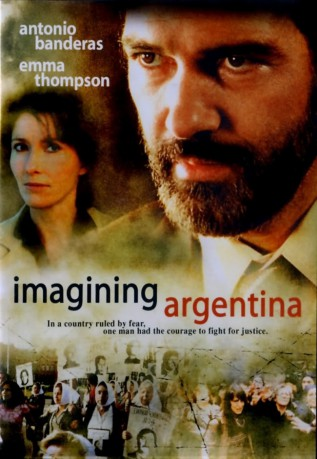

#4120 Verschleppt
Alternativ: Imagining Argentina
 
 IMDB-Wertung: 6.3 / 10
IMDB-Wertung: 6.3 / 10  Metascore: 0
Metascore: 0 
Argentinien 1976: Die Militärdiktatur regiert mit blutigem Terror, Tausende verschwinden in den Folterkellern des Regimes, Angst und Schrecken beherrschen das Land. Der Künstler Carlos Rueda versucht sich aus der Politik herauszuhalten, doch als seine Frau von den Schergen der Junta verschleppt wird, muss auch er sich bekennen. Verzweifelt macht er sich auf die Suche nach der Wahrheit, doch dabei stößt er auf ein rätselhaftes Phänomen: Plötzlich scheint es, als verfüge er über seherische Fähigkeiten – als trete er in seinen Visionen mit den Verschwunden in Kontakt.
Jahr: 2003
Dauer: 103 Minuten
FSK:
Land: Spanien Studio: Arenas EntertainmentTonspuren:
Untertitel:
Auflösung: 720p (1280x720) Größe: 2375 MB
Genre: Drama, Liebe, Thriller
Regisseur: Christopher Hampton
Drehbuch: Junichi Masuda
Soundtrack:
Darsteller:
- Irene Escolar als Eurydice
- Fernando Tielve als Orfeo / Enrico
 Antonio Banderas als Carlos Rueda
Antonio Banderas als Carlos Rueda Emma Thompson als Cecilia Rueda
Emma Thompson als Cecilia Rueda Maria Canals-Barrera als Esme Palomares
Maria Canals-Barrera als Esme Palomares Rubén Blades als Silvio Ayala
Rubén Blades als Silvio Ayala Leticia Dolera als Teresa Rueda
Leticia Dolera als Teresa Rueda Luis Antonio Ramos als Policeman 2
Luis Antonio Ramos als Policeman 2 Kuno Becker als Gustavo Santos
Kuno Becker als Gustavo Santos Anton Lesser als General Guzmán
Anton Lesser als General Guzmán- John Wood als Amos Sternberg
 Claire Bloom als Sara Sternberg
Claire Bloom als Sara Sternberg- Ernesto Hernández als Duarte
- David Bendito als Prision Guard 3 , uncredited
- Hector Bordoni als Pedro Augustín
- Anthony Diaz-Perez als Policeman 1
- Carlos Kaniowsky als Rubén Mendoza
- Stella Maris als Concepta Madrid
- Concha Hidalgo als Octavio Marquez's Grandmother
- Ana Gracia als Hannah Masson
- Horacio Obón als Victor Madrid
- Amparo Valle als Julia Obregon's Mother
- Cielo Verano als Julia Obregon
- María Nydia Ursi als Plaza Mother 1
- Elvira Villarino als Plaza Mother 2
- Araceli Dvoskin als Plaza Mother 3
- Susana Salerno als Plaza Mother 4
- Anahí Martella als Plaza Mother 5
- Pochi Ducasse als Church Mother 1
- Alicia Palmes als Church Mother 2
- Liz Balut als Church Mother 3
- Teresa Mejias als Nun 1
- Carola Noriega als Nun 2
- Dan Trugman als Lieutenant
- Vanesa Vélez als Tango Dancer 1
- Andrés González als Tango Dancer 2
- Marzenka Novak als Sasha
- Eusebio Lázaro als Pereira
- Vera Czemerinski als Prisoner
- Sara Fernández als Marta
- María Borrego als Nurse
- Leonardo Azamor als Prison Guard 1
- Rubén Laperuta als Prison Guard 2
- Mariana Seligmann als Guzman's Daughter
- Alejandro Rivas als Prince Prospero
- Miguel Antón als Children Theatre Players
- Celia Arias als Children Theatre Players
- Ana Armas als Children Theatre Players
- Ana Paula Cidón als Children Theatre Players
- Paris Galindo als Children Theatre Players
Datei: X:\2003(N-Z)\Verschleppt (2003, FSK, 1280x720).mkv seit 25.07.2016
Festplatte: HD 2003-2004-2005(A-F)
 Es gibt insgesamt 46 Filme in der Gruppe '2003(N-Z)'
Es gibt insgesamt 46 Filme in der Gruppe '2003(N-Z)'